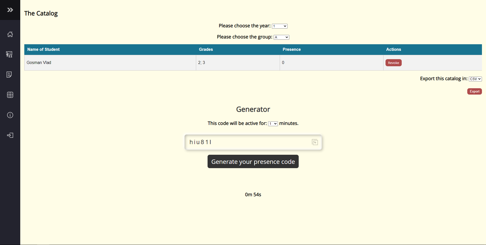
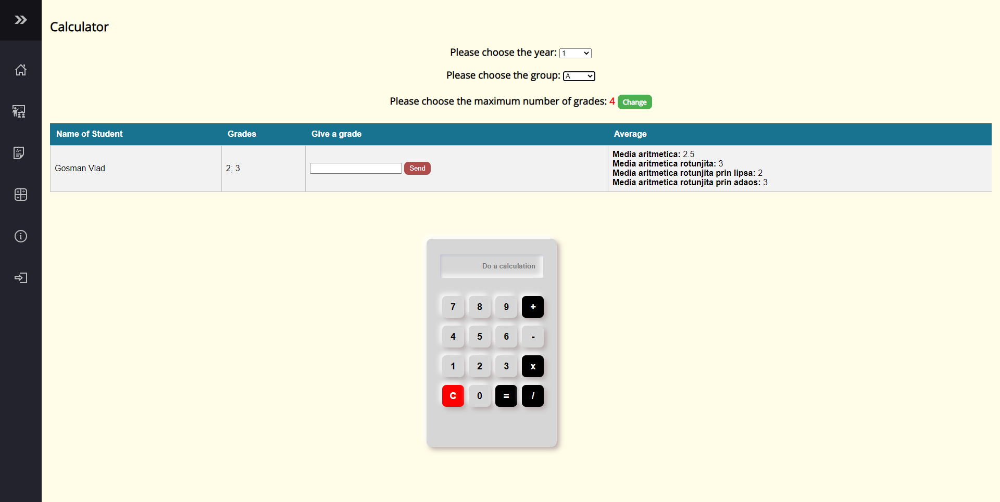

Aplicația permite gestionarea cu ușurință a activității didactice într-o relație de tip profesor-student.
Interfața interactivă permite oricărui student să-și creeze un cont pe platforma, să își aleagă materiile în
funcție de anul în care se află și grupa la care să participe la cursuri și seminarii. De asemenea, acesta își
poate monitoriza întreaga activitate, aflându-și numărul de prezențe și notele direct din platforma, într-un mod
individual cu posibilitatea de a face contestație, în funcție de materia la care face parte. De asemenea, orice
profesor își poate creea un cont pe această platforma și acesta își poate administra cursurile și laboratoarele,
având o evidență clară a elevilor săi (procentul de prezența, notele individuale și media notelor). Un cont de
profesor are acces și la generarea cataloagelor, importarea unor studenți direct din platforma, acceptarea sau
respingerea unor studenți pentru cursurile/laboratoarele predate de el.
Tehnologii utilizate
PHP pentru preluarea datelor din baza de date și trimiterea lor către front-end
MariaDB pentru stocarea datelor într-un mod eficient
HTML, CSS si JavaScript pentru front-end, modul în care afisăm informațiile user-ilor
Sisteme implementate
Sistemul de inregistrare
Platforma necesită un cont valid pentru a putea folosi într-un mod eficient întregul sistem. Astfel, pentru
crearea unui astfel de cont,
punem la dispoziție o pagină web cu mai multe field-uri în care userul își poate adăuga datele personale, date
valide, cu care se poate autentifica ulterior pe platformă.
La finalul completării, acesta își poate selecta tipul contului (cont de student sau cont de profesor). În cazul
bifarii checkbox-ului "profesor", acesta va necesită o aprobare
din partea unui administrator (un cont special, prestabilit în faza de dezvoltare, acesta având acces la
întreagă platforma). După un astfel de proces, indiferent de alegerea făcută
de administrator (a acceptat/resping contul), userului îi va fi trimis un email în care va fi informat de
decizia administratorului.
Sistemul de autentificare
Similar, pentru sistemul de autentificare, se completează câmpurile cu date valide din baza de date (în caz
contrar, va eșua autentificarea) și userului îi va fi permis
accesul pe platforma, având permisiunile în funcție de tipul contului.
Sistemul de evidenta al prezentelor
Profesorul poate genera un cod de prezenta random, pentru un anumit curs (selectat din pagina de selectie).
Codul de prezenta poate fi valabil pentru 1, 3, 5, 7, 9, 10 minute.
Odata generat codul de prezenta pentru acest curs, nu se va mai putea genera altul, pana cand cel curent nu
expira. Un countdown va fi afisat in pagina.
Studentii primesc codul de prezenta pe care il vor introduce in pagina 'Class'. In functie de valabilitatea
codului, acesta primeste un mesaj de eroare/succes. In cazul
mesajelor de eroare, prezenta nu va fi luata in considerare. In cazul mesajului de succes (prezenta se
inregistreaza), codul respectiv nu va mai fi valabil pentru acest student.
Sistemul de management al studentilor
Studentul are dreptul de a-si selecta profesorii pentru materiile din anul in care se afla. Odata trimisa
cererea, aceasta va deveni 'In pending' pana cand profesorul tinta
va accepta/respinge acest student. Daca accepta, pe homepage-ul studentului cererea va aparea cu status
'Accepted'.
Un profesor poate elimina un student dintr-o grupa in orice moment de pe pagina 'Class'. Chiar daca studentul a
fost eliminat din grupa, notele lui vor fi pastrate.
Sistemul de trimitere a temelor
Studentul poate trimite diverse teme catre profesori pentru diverse cursuri (la care este acceptat). Pe pagina
dedicata acestui sistem, studentul poate incarca orice tip de fisier
care va ajunge ulterior in pagina de Assesments la profesor. Acesta ii poate acorda o nota de la 1 la 10 si un
mesaj de observatii (optional). Odata corectata tema, se va inregistra
data la care a fost corectata tema, nota si observatiile trimise catre student si se vor afisa pe pagina de
'Assesments' in contul de student.
Sistemul de calcul al mediilor
Platforma calculeaza mediile fiecarui student, pe baza notelor puse pana in acest moment. Aceste medii (media
propriu-zisa, media rotunjita, media rotunjita superior si inferior) vor
aparea pentru fiecare student pe pagina 'Calculator' atat pentru studenti cat si pentru profesori.
Profesorul poate modifica numarul maxim de note posibile pentru un anumit curs si poate pune note pe diverse
ascultari (separate de notele puse pe teme). Numarul maxim de note
poate fi modificat de orice profesor care preda acel curs si poate fi resetat oricand.
Sistemul de management al profesorilor
Profesorii pot primi acces la platforma prin 2 metode: Import XML oferit de administrator (care ofera acces
direct pe platforma) si inregistrarea propriu-zisa facuta de profesori direct
pe platforma prin introducerea datelor personale. Acest tip de inregistrare nu ofera acces direct pe platforma,
intrucat oricine isi poate crea un astfel de cont. Astfel, odata inregistrat contul
de profesor va ajunge in pagina de administrator, unde poate fi aprobat sau respins. In cazul aprobarii, acel
cont va fi valid si primeste acces pe platforma. In cazul respingerii, datele contului
respectiv vor fi sterse definitiv.
Sistemul de importare XML
Administratorul poate importa in baza de date pe baza unui fisier de tip XML. Astfel, pe pagina de admin este
pus la dispozitie un dropdown de tip select, care ofera administratorului
posibilitatea de a alege tabelul tinta in care vor fi introduse datele in urma importului.
Administratorul poate importa: studenti, profesori, alocari (poate aloca studenti la anumite cursuri si anumiti
profesori la anumite cursuri - pe care le va preda ulterior), cursuri.
Intrucat pentru construirea XML-ului va fi nevoie de ID-urile diversilor profesori/studenti/cursuri, am pus la
dispozitie sistemul de cautare in baza de date, descris mai jos.
Sistemul de cautare pentru admin
Administratorul poate cauta in baza de date pentru a afla mai multe informatii despre un student/profesor sau
curs. Astfel, pe pagina 'Lists' am pus la dispozitie un input de tip cautare,
unde se va introduce numele unui student/profesor sau curs, ulterior afisand informatii din toate 3 tabele pe
baza datelor introduse in camp.
Tipuri de conturi
Cont de student
După prima autentificare cu un cont de student, acestuia îi va apărea pe pagina principală materiile din anul
respectiv (an selectat odată cu înregistrarea
contului). Acesta va avea posibilitatea să vadă, pentru fiecare materie, profesorul care predă materia
selectată, alături de grupa unde o preda (în cazul în care acesta nu dorește
să facă cursurile și seminariile la grupa în care se află inițial). Acesta poate selecta un anumit profesor,
care predă la o anumită grupă. Cererea va fi trimisă direct către profesorul selectat
acesta având posibilitatea de a accepta/respinge cererea făcută de student, alături de un mesaj (în cazul
respingerii) în care va fi menționat motivul respingerii.
Cont de profesor
Profesorul va fi repartizat la o anumită grupa (specificată de administratorul platformei odată cu aprobarea
contului), astfel acesta își va putea administra
propriile cursuri/laboratoare de pe pagina principala, cu referințe către alte pagini interne (vom dezvoltă
mai mult această secțiune atunci când vom stabili arhitectura pentru pagină
principală, în cazul autentificării cu un cont de profesor).
Cont de admin
Adminul va avea posibilitatea de a popula baza de date utilizand fisiere de tip XML si va putea oferi drepturi
de
admin unor profesori
Pagini implementate si modul de utilizare
Pagina principala
In urma autentificarii cu succes, utilizatorul va fi primit de o pagina principala unde va gasi pe 3 carduri
cele mai importante informatii
despre cursurile ce le preda si despre grupele pe care le are in grija.
Sub aceste carduri regasim tabelul 'Registration applications' locul unde profesorul va putea vedea cererile de
inregistrare si va avea posibilitatea
de a vedea informatii importante despre aceasta si de a accepta sau refuza cererea.
Home page
Pagina principala pentru contul de profesori
Studentii vor descoperi pe pagina principala informatii utile despre grupa in care se afla, despre temele
predate si notele primite.
Acestia vor putea trimite o cerere de primire in grupa altui profesor utilizand tabelul disponibil sub
card-urile cu informatii utile
simultan, isi pot vizualiza notele primite la fiecare materie intr-un mod rapid si eficient
Pagina calculator pentru studenti
Pagina class
In cazul conturilor de tip profesor, in aceasta pagina vezi putea alege catalogul corespunzator anului si grupei
pe care o aveti.
Dupa ce ati ales anul si grupa corespunzatoare vezi putea vizualiza atat notele cat si prezentele fiecarui
student si totodata posibilitatea de a-l revoca din aceasta tabela
De asemenea, aveti posibilitatea de a exporta catalogul in format CSV si de a genera un cod unic de prezenta pe
care mai apoi sa il puteti trimite studentilor pentru a-si inregistra prezenta.
Pagina de alegere a materiei (teachers)
Pagina de selectare a materiei la care profesorul preda
Pagina class (teachers)

Pagina class pentru conturile de tip profesor
In cazul studentilor, putem vizualiza din nou notele la materiile inscrise si gasim un field special
unde trebuie introdus codul de prezenta primit de la profesor, numarul de prezente va fi incrementat in mod
automat la materia profesorului.
Pagina class (students)
Pagina class pentru conturile de tip student
Pagina assesments
In aceasta pagina, profesorii vor avea posibilitatea de a descarca fisierele trimise de catre studenti iar
ulterior de a le da o nota si un mesaj aditional + data la care a fost trimisa tema.
Pagina assesments (teachers)
Pagina assesments pentru conturile de tip profesor
Studentii vor putea selecta materia la care trebuie sa trimita materia si vor putea trimite un fisier de pe
masina locala.
Pagina assesments (students)
Pagina assesments pentru conturile de tip student
Pagina calculator
Profesorii vor putea sa puna note noi studentilor dintr-o tabela ulterior aleasa, sa vada 4 tipuri de medie
calculate automat
(media aritmetica, rotunjita, rotunjita prin lipsa, rotunjita prin adaos) si de asemenea sa efectueze diferite
calcule pe widget-ul calculator
adaugat in aceasta sectiune.Simultan pot seta tot din aceasta pagina numarul maxim de note ce doreste sa le
atribuie studentilor.
Pagina calculator (teachers)

Pagina calculator pentru profesori
Conturile de tip student vor putea vedea notele si media lor aritmetica calculata automat in moduri multiple.
Pagina calculator (students)
Pagina calculator pentru studenti
Pagina about
Prezinta motivatia noastra pe scurt, multumiri celor ce incearca aplicatia si link-ul catre aceasta
documentatie.
Pagina about
Pagina admin
Aceasta pagina va fi valabila doar conturilor cu drept de admin.Aici adminul/secretara va putea face upload
fisierelor de tip XML ce vor popula diferite tabele din baza de date si sa faca search unor informatii utile ale
studentilor/profesorilor/cursurilor.
Pagina admin de import XMLPagina admin de interogare baza de date
Mediu de dezvoltare
Inițial s-a creat sistemul care conectează platforma cu baza de date MariaDB, folosind MySQL PDO (PHP Data
Objects). Motivația alegerii unei astfel de tehnologii a fost
rapiditatea de care dă dovadă și maleabilitatea, în cazul actualizării MySQL. În această etapă, s-au dezvoltat și
controllere care permit autentificarea și înregistrarea unui cont,
acesta stabilind ulterior tipul contului în funcție de datele introduse. În acest sprint s-a inclus doar crearea a
două tabele în baza de date, care să ne permită testarea functionalitatilor,
urmând că pe viitor să stabilim arhitectura bazei de date generală a proiectului și optimizarea ei.
Am stabilit cu echipa un layout care să respecte principiul KISS, astfel făcând navigarea mai ușoară și mai
interactivă pe platformă.Tot aici am stabilit și paginile comune
(layout comun pentru anumite pagini, iar alt layout pentru alte pagini precum pagina de autentificare,
înregistrare, recuperare parolă) și am început prototipizarea generală a website-ului.
Mediu de lucru
S-a folosit git pentru versionare, respectiv pentru dezvoltarea proiectului într-un mod curat si sigur.
Se vor folosi eventuale spreadsheet-uri google, unde vor fi trecute sprinturi care vor conîine task-uri cu un
anumit deadline, pentru fiecare componenta a platformei, in functie de prioritatea sistemelor.
Discord pentru meet-uri, stabilirea urmatoarelor taskuri, statusuri si blocaje de proiect.
Motivatia design-ului
Design-ul pentru paginile de Log-In, Register, Recover Password
Pentru acest proiect am optat pentru un design simplu si intuitiv.Pentru paginile de log-in, register si
password recover am folosit o imagine de fundal relevanta no copyright ce are la baza culoarea blue navy,
culoare ce exprima calm, luciditate si securitate, unele dintre aceste atribute dorindu-ne sa le oferim prin
aplicatia noastra.
Pentru introducerea in tematica am schimbat cursorul cu un pencil ce il vom regasi doar in paginile de login,
register si recuperare parola.De asemenea, butoanele sunt usor de folosit si intuitive.
Toate aceste elemente sunt regasite intr-un chenar alb cu un border subtil in culoare maro inchis pentru a se
potrivi cu fundalul, chenar ce contine un logo svg tematic alaturi de titlul relevant paginii respective.
Design-ul pentru paginile principale ale proiectului
Pentru paginile principale ale aplicației noastre WEB (Home, Class, Assesment Grades, Calculator, About) am
folosit un navbar vertical responsive pentru intuitivitatea ce ne oferă de culoare dark grayish navy
.Am ales această culoare pentru vizibilitatea ce ne oferă pe orice fundal însă totodată nu este o culoare foarte
dură și/sau stridentă.
Această bară de navigare este una ușor de folosit, devenind extended când dăm hover deasupra ei, moment în care
regăsim logo-uri svg alături de titlurile fiecărei pagini pentru a fi cât mai ușor de folosit, de asemenea
culoarea fiecărui buton se iluminează în momentul trecerii cursorului peste el iar ca element grafic regăsim o
săgeata ce semnifică tranziția din modul compressed și cea extended a barii de navigare.
Pentru fundalul paginilor am folosit culoarea crem.Pe lângă compatibilitatea cu nuanță de gri aleasă pentru
navbar, culoarea crem este una ce oferă comfort și ajută dezvoltarea noilor idei, o componentă importantă pentru
utilizatorii aplicației noastre.
Sistemul de management al codului-sursă
Orice functionalitate/element de design este despartita in mai multe componente (functii, api-uri, views,
componente mai mici).
Astfel, pentru fiecare tabel din baza de date s-a creat cate un Controller care ofera diverse servicii, pe baza
anumitor date.
Legatura dintre views si controllers este facuta de API-uri, care preia datele de pe front-end si le trimite catre
controller, asteptand un raspuns.
Organizarea fisierelor s-a facut cat mai simplista, oferind transparenta, logica. Astfel, in fisierul app sunt
facute operatiile back-end (Controllers, API), iar in folderul public
se afla toate fisierele publice, deschise catre useri (views), cu legatura in fisierul components, unde se afla
componente mai mici, dinamice (am incercat pe cat posibil sa oferim dinamica,
sa eliminam datele hardcoded si o componenta sa poata fi folosita in mai multe locuri, cu date diferite).
Pentru platforma s-au creat si mici functii, localizate in includes->functions, cu rolul de a oferi dinamica si
citire usoara a codului.